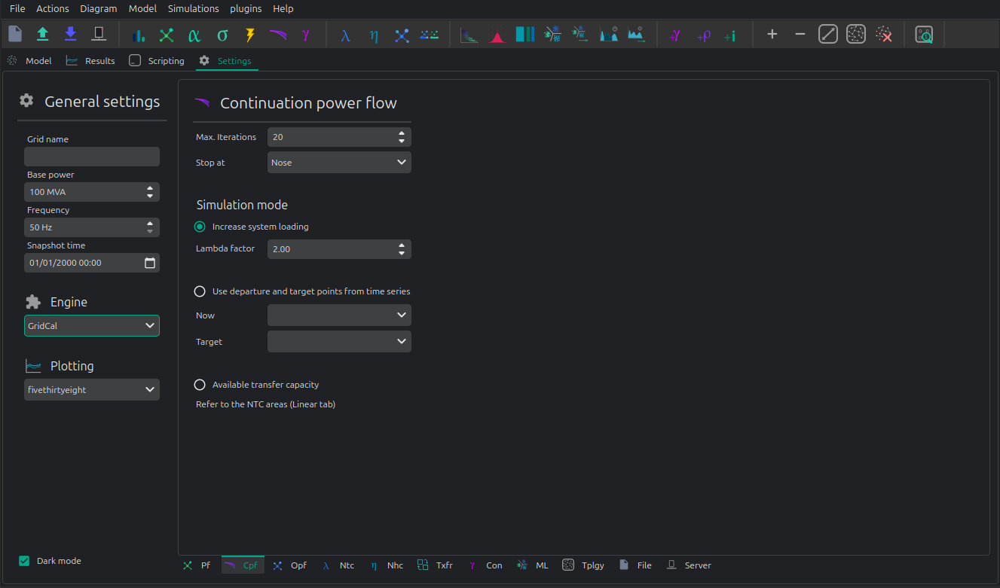
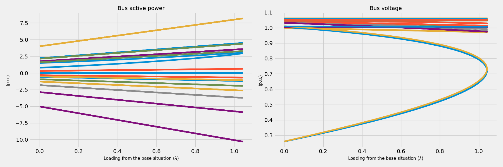

➿ Continuation power flow
VeraGrid can run continuation power flows (voltage collapse studies)

Max. Iterations Number of iteration to perform at each voltage stability (predictor-corrector) stage.
Stop at Point of the curve to top at
- Nose: Stop at the voltage collapse point
- Full: Trace the full curve.
Use alpha target from the base situation The voltage collapse (stability) simulation is a “travel” from a base situation towards a “final” one. When this mode is selected the final situation is a linear combination of the base situation. All the power values are multiplied by the same number.
Use departure and target points from time series When this option is selected the base and the target points are given by time series points. This allows that the base and the final situations to have non even relationships while evolving from the base situation to the target situation.
Registered Result Properties
ContinuationPowerFlowResults registered properties
The continuation power flow result stores the solved continuation path and branch quantities at each continuation step.
Property |
Type |
Description |
|---|---|---|
|
|
Names aligned with bus-indexed result arrays. |
|
|
Names aligned with branch-indexed result arrays. |
|
|
Bus type code used by the solved numerical model. |
|
|
Complex bus voltage solutions along the continuation path. |
|
|
Continuation loading parameter values. |
|
|
Solver error or residual value. |
|
|
Convergence flag for the solved case or time step. |
|
|
Complex branch power flow at the from side. |
|
|
Complex branch power flow at the to side. |
|
|
Branch loading result. |
|
|
Complex branch losses. |
|
|
Complex bus power injection. |
SigmaAnalysisResults registered properties
The sigma analysis result stores the sigma-plane values and distances used by the voltage-stability assessment.
Property |
Type |
Description |
|---|---|---|
|
|
Loading parameter used by the sigma analysis. |
|
|
Names aligned with bus-indexed result arrays. |
|
|
Complex bus power injection. |
|
|
Distance of each bus point to the sigma stability boundary. |
|
|
Real component of the sigma-plane value. |
|
|
Imaginary component of the sigma-plane value. |
API
Snapshot continuation power flow
import os
from matplotlib import pyplot as plt
import VeraGridEngine as gce
plt.style.use('fivethirtyeight')
folder = os.path.join('..', 'Grids_and_profiles', 'grids')
fname = os.path.join(folder, 'South Island of New Zealand.veragrid')
# open the grid file
main_circuit = gce.open_file(fname)
# Run the continuation power flow with the default options
# Since we do not provide any power flow results, it will run one for us
results = gce.continuation_power_flow(grid=main_circuit,
factor=2.0,
stop_at=gce.CpfStopAt.Full)
# plot the results
fig = plt.figure(figsize=(18, 6))
ax1 = fig.add_subplot(121)
res = results.mdl(gce.ResultTypes.BusActivePower)
res.plot(ax=ax1)
ax2 = fig.add_subplot(122)
res = results.mdl(gce.ResultTypes.BusVoltageModule)
res.plot(ax=ax2)
plt.tight_layout()
plt.show()
A more elaborated way to run the simulation, controlling all the steps:
import os
from matplotlib import pyplot as plt
import VeraGridEngine as gce
plt.style.use('fivethirtyeight')
folder = os.path.join('..', 'Grids_and_profiles', 'grids')
fname = os.path.join(folder, 'South Island of New Zealand.veragrid')
# open the grid file
main_circuit = gce.FileOpen(fname).open()
# we need to initialize with a power flow solution
pf_options = gce.PowerFlowOptions()
power_flow = gce.PowerFlowDriver(grid=main_circuit, options=pf_options)
power_flow.run()
# declare the CPF options
vc_options = gce.ContinuationPowerFlowOptions(step=0.001,
approximation_order=gce.CpfParametrization.ArcLength,
adapt_step=True,
step_min=0.00001,
step_max=0.2,
error_tol=1e-3,
tol=1e-6,
max_it=20,
stop_at=gce.CpfStopAt.Full,
verbose=False)
# We compose the target direction
factor = 2.0
base_power = power_flow.results.Sbus / main_circuit.Sbase
vc_inputs = gce.ContinuationPowerFlowInput(Sbase=base_power,
Vbase=power_flow.results.voltage,
Starget=base_power * factor)
# declare the CPF driver and run
vc = gce.ContinuationPowerFlowDriver(grid=main_circuit,
options=vc_options,
inputs=vc_inputs,
pf_options=pf_options)
vc.run()
# plot the results
fig = plt.figure(figsize=(18, 6))
ax1 = fig.add_subplot(121)
res = vc.results.mdl(gce.ResultTypes.BusActivePower)
res.plot(ax=ax1)
ax2 = fig.add_subplot(122)
res = vc.results.mdl(gce.ResultTypes.BusVoltageModule)
res.plot(ax=ax2)
plt.tight_layout()
plt.show()

Theory
The continuation power flow is a technique that traces a trajectory from a base situation given to a combination of power and voltage , to another situation determined by another combination of power . When the final power situation is undefined, then the algorithm continues until the Jacobian is singular, tracing the voltage collapse curve.
The method uses a predictor-corrector technique to trace this trajectory.